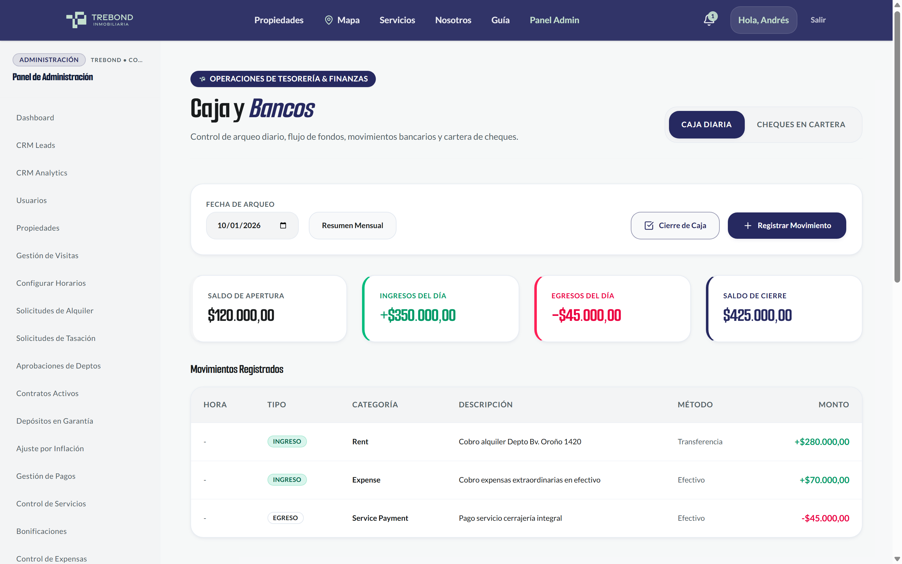
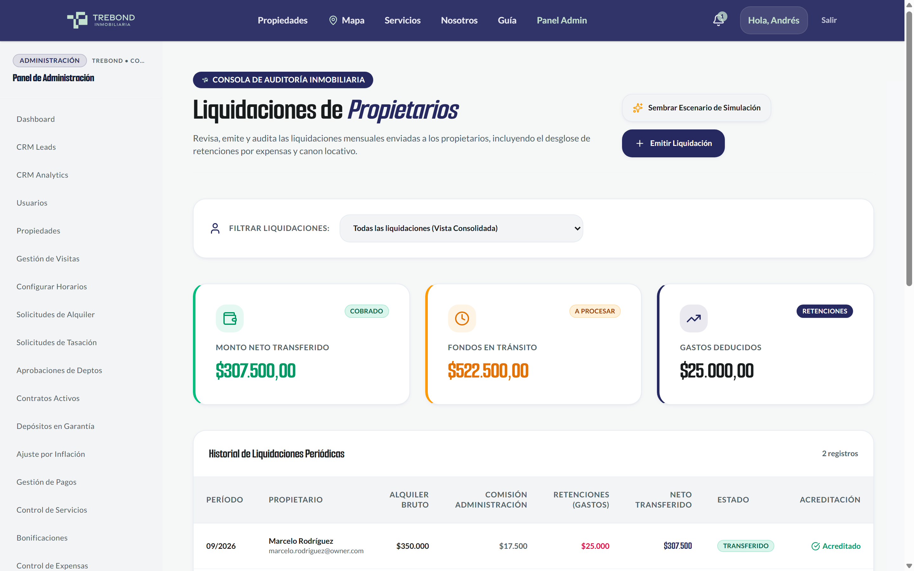
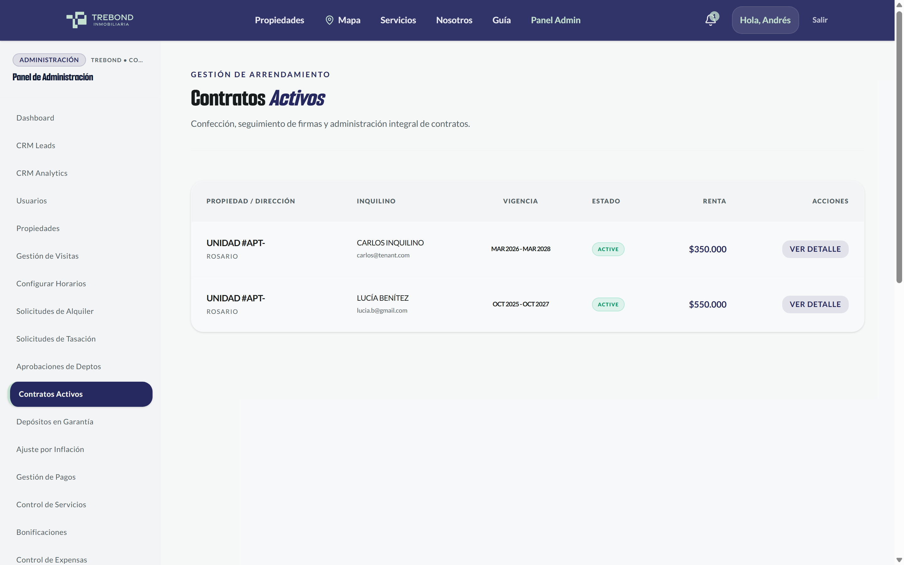
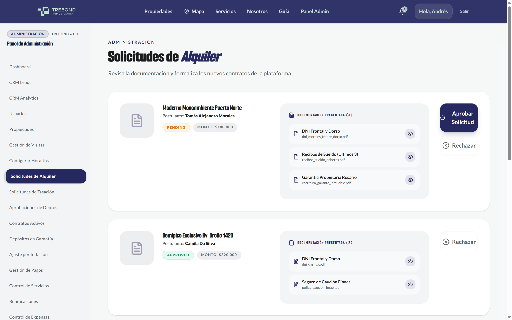
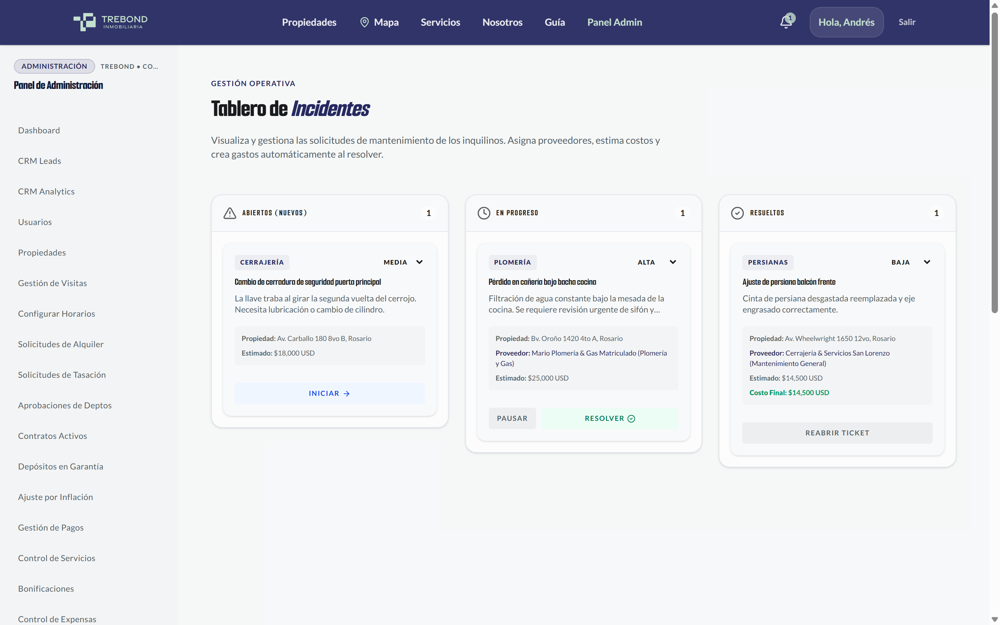
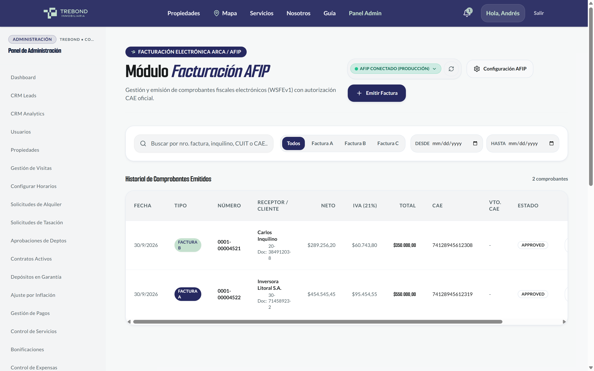
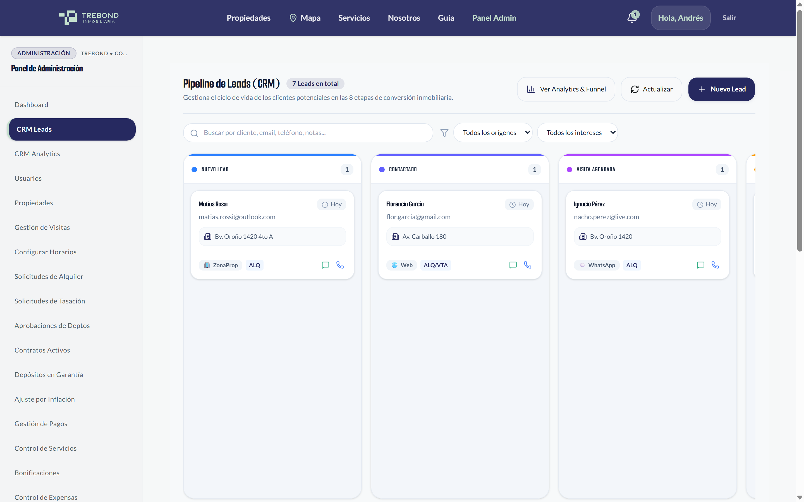
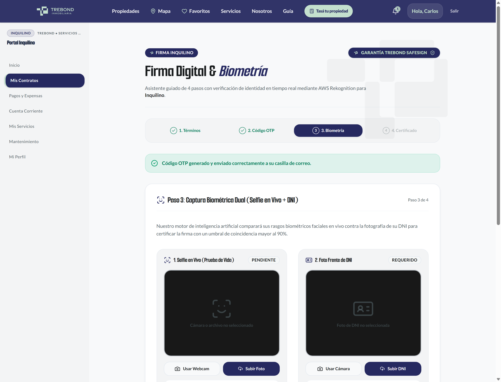

Trebond Inmobiliaria
1. Enlaces y Accesos a la Plataforma
La plataforma Trebond funciona de forma directa en cualquier navegador web, sin necesidad de instalar programas adicionales:
| Sección del Sistema | Enlace de Acceso Directo | ¿Para qué sirve? |
|---|---|---|
| Página Web Pública | https://trebond-frontend.vercel.app | Buscador de inmuebles para el público general, fotos, solicitud de tasación y contacto directo. |
| Panel Central de la Inmobiliaria | /admin | Resumen general del negocio: propiedades alquiladas, cobranzas del mes y accesos rápidos. |
| Caja y Arqueo Diario | /admin/caja | Ingresos y egresos de dinero (Pesos y Dólares), cobranzas de alquileres y botón de Cierre de Caja. |
| Cuentas Corrientes | /admin/cuenta-corriente | Detalle de lo que debe pagar cada inquilino, cobros registrados, botón de imputación manual y recibos PDF. |
| Liquidaciones a Propietarios | /admin/liquidaciones | Cálculo del alquiler cobrado, descuento automático de la comisión de Trebond y emisión del pago al dueño. |
| Inmuebles y Propietarios | /admin/propiedades | Lista de departamentos y casas, publicación en portales y botón para asignar el dueño a cada propiedad. |
| Contratos de Alquiler | /admin/contratos | Contratos vigentes, vencimientos, cálculo de aumentos por inflación y firma digital. |
| Postulaciones y Solicitudes | /admin/solicitudes | Revisión de recibos de sueldo y garantías de interesados en alquilar, con aprobación en 1 clic. |
| Mantenimiento y Arreglos | /admin/mantenimiento | Pedidos de reparación enviados por los inquilinos, asignación de plomeros o gasistas y presupuestos. |
| Facturación AFIP | /admin/facturacion | Emisión de Facturas oficiales electrónicas (A, B y C) con CAE y código QR normativo. |
| Seguimiento de Clientes (CRM) | /admin/crm | Tablero de interesados: llamados, visitas coordinadas a inmuebles y reservas en curso. |
| Portal del Inquilino | /portal/pagos | Pantalla que ve el inquilino al iniciar sesión: saldo a pagar, recibos en PDF y aviso de arreglos. |
| Portal del Propietario | /dashboard/owner | Pantalla que ve el dueño al iniciar sesión: sus propiedades, liquidaciones cobradas y comprobantes netos. |
2. Cuentas de Acceso y Claves de Demostración
Para probar las diferentes vistas del sistema y verificar qué ve cada persona, puede ingresar con estas cuentas preparadas:
| Tipo de Usuario | Correo Electrónico | Contraseña | ¿Qué puede hacer en el sistema? |
|---|---|---|---|
| Administrador | admin@trebond.com.ar |
admin123 |
Acceso completo: cerrar la caja, imputar cobros y gastos, liquidar a dueños, vincular propiedades y emitir facturas. |
| Propietario (Dueño) | marcelo.rodriguez@owner.com |
admin123 |
Ve solo sus propiedades, revisa el dinero que le depositó la inmobiliaria y descarga sus liquidaciones en PDF. |
| Inquilino | carlos@tenant.com |
admin123 |
Ve cuánto tiene que pagar de alquiler, consulta los recibos de pago y solicita arreglos de mantenimiento. |
3. Panel de Control y Métricas del Negocio /admin
Al ingresar como administrador, esta pantalla inicial ofrece un resumen claro del estado general de la inmobiliaria en tiempo real:
Ocupación Propiedades Alquiladas
Muestra cuántas propiedades de la cartera están habitadas y avisa con anticipación si algún contrato está por vencer en los próximos 60 días.
Cobranzas Estado de Cobros del Mes
Permite ver de un vistazo qué porcentaje de inquilinos ya pagó entre el día 1 y 10, y quiénes tienen cuotas pendientes.
Tesorería Dinero Disponible en Caja
Suma total del dinero en efectivo y cuentas bancarias de la inmobiliaria, discriminado en Pesos y Dólares.
Clientes Nuevas Consultas y Visitas
Cantidad de personas interesadas que escribieron por la web, visitas pactadas para la semana y contratos por firmar.

4. Caja Diaria y Arqueo de Cierre /admin/caja
Esta sección registra todos los cobros en efectivo, transferencias y pagos a proveedores. Incorpora la función de Arqueo y Cierre de Caja Diario para que el balance de la oficina sea siempre exacto:
/admin/caja, en la parte superior derecha (junto a los filtros de fecha), se encuentra el botón destacado "Cerrar Caja" en color azul marino con el ícono de un candado.
- Saldo Inicial: Con cuánto dinero se abrió la caja ese día.
- Total Ingresos: Alquileres cobrados, expensas y señas recibidas durante el día.
- Total Egresos: Pagos a proveedores, plomeros o retiros de dinero autorizados.
- Saldo Esperado (Sistema): El dinero que exactamente debería haber en el cajón según las operaciones cargadas.
- Si coincide exactamente con el sistema, se muestra en verde el aviso de Caja Cuadrada (Diferencia: $0,00).
- Si hay alguna diferencia (sobrante o faltante), el sistema lo calcula al instante y permite escribir una nota aclaratoria.


5. Cuentas Corrientes, Cobros Mensuales y Recibos /admin/cuenta-corriente
Esta pantalla reúne el estado de cuenta de cada cliente (inquilino o propietario). Permite ver con total claridad qué conceptos corresponden a cada mes y cargar cobros o gastos de forma manual:
A. Pestañas para Filtrar Cobros y Pagos
Para no confundirse entre lo que la persona debe y lo que ya pagó, arriba del listado hay 3 pestañas muy sencillas:
- Pestaña "Todos": Muestra el historial completo de movimientos ordenados por fecha con el saldo acumulado.
- Pestaña "A Cobrar (Cargos a Pagar)": Muestra solo lo que el inquilino tiene pendiente de pago en el mes (el alquiler del mes, expensas del edificio, ajustes o intereses si pagó fuera de término).
- Pestaña "A Pagar / Pagos Recibidos": Muestra los pagos que ya ingresaron (efectivo, transferencias o depósitos bancarios a favor del cliente).
B. Identificación del Origen de Cada Movimiento
Cada fila de la tabla tiene una etiqueta de color para saber rápidamente de dónde surgió ese concepto:
- Automático · Contrato Se genera solo al inicio de cada mes según el contrato de alquiler vigente.
- Expensas Cargado a partir del importe de expensas informado para ese departamento.
- Carga Manual Un cargo o descuento ingresado manualmente por el personal de Trebond (por ejemplo, una reparación o un ajuste acordado).
C. Carga Manual de Conceptos Paso a Paso
/admin/cuenta-corriente, presione el botón azul "Imputar Concepto".

D. Comprobante en PDF con Identidad Oficial Trebond
Al presionar "Descargar Estado de Cuenta (PDF)", se genera el comprobante oficial listo para entregar al cliente o enviar por WhatsApp:
- Diseño Oficial Trebond: Cabecera institucional en Azul Marino (
#262960), detalles en Verde Menta (#C4E0CE) y logotipo oficial nítido. - Datos de Contacto Actualizados: Correo oficial
contacto@trebond.com.ary sitio webwww.trebond.com.ar. - Todo en Español Claro: Las descripciones se leen en lenguaje cotidiano (ej: Gasto / Expensa o Interés por mora), sin términos técnicos confusos.

6. Liquidaciones a Propietarios y Cálculo Neto /admin/liquidaciones
Esta sección sirve para rendir cuentas y pagarle mensualmente al dueño de cada propiedad administrada, de forma automática y transparente:
/admin/liquidaciones, haga clic en el botón "Emitir Liquidación". El sistema busca automáticamente el contrato del departamento, el valor de alquiler que pagó el inquilino ese mes y calcula la comisión que le corresponde a Trebond.
/dashboard/owner), va a la pestaña "Liquidaciones" y ve una tarjeta clara con el monto neto que se le transfirió, la fecha y un botón para descargar el comprobante en PDF con el detalle de los descuentos.

7. Vinculación de Inmuebles a sus Propietarios /admin/propiedades
Para poder confeccionar un contrato de alquiler y liquidar el dinero todos los meses, cada propiedad debe estar vinculada al dueño correspondiente:
/admin/propiedades, en la tabla de departamentos y casas encontrará la columna "Propietario". Si un inmueble aún no tiene dueño asignado, verá el botón ámbar "Vincular Propietario".
- Si el dueño ya es cliente: Escriba su nombre, apellido o DNI en el buscador y elíjalo de la lista desplegable.
- Si es un dueño nuevo: Ingrese allí mismo su Nombre, DNI, Teléfono y Correo. El sistema creará su ficha de cliente y lo dejará vinculado a la propiedad en el mismo momento.

8. Contratos de Alquiler y Ajuste por Inflación (IPC/ICL) /admin/contratos
Administración completa de los contratos de locación celebrados en la inmobiliaria:
/admin/indexacion, el sistema consulta los índices oficiales del Banco Central (BCRA) e INDEC. Al cumplirse el período acordado (por ejemplo, ajuste cada 3 o 6 meses), calcula automáticamente el nuevo importe del alquiler y envía un aviso por correo al inquilino y al propietario.

9. Postulaciones y Calificación de Inquilinos /admin/solicitudes
Mesa de entrada digital para evaluar a las personas interesadas en alquilar una propiedad:
Solvencia Calificación Automática
El sistema revisa los recibos de sueldo subidos por el interesado, verifica que no tenga deudas bancarias y confirma que el alquiler no supere el 30-35% de sus ingresos mensuales.
1 Clic Aprobación Directa
Al hacer clic en "Aprobar y Convertir en Inquilino", la persona queda habilitada de inmediato para firmar su contrato y pagar desde el celular.

10. Mantenimiento, Reparaciones y Proveedores /admin/mantenimiento
Organización de los arreglos técnicos en los inmuebles que administra la inmobiliaria:
/admin/proveedores), el administrador elige al plomero, gasista o cerrajero y le envía los datos para que coordine la visita.

11. Facturación Electrónica con AFIP (CAE y QR) /admin/facturacion
El sistema se comunica directamente con la AFIP para emitir las facturas oficiales de honorarios y alquileres:
- Facturas A, B y C: Se emiten según corresponda para alquileres comerciales o residenciales, con desglose de IVA o régimen de Monotributo.
- Código de Autorización Oficial (CAE): Se obtiene en 2 segundos desde AFIP con su fecha de vencimiento legal.
- Código QR Oficial: Cada factura emitida incluye el código QR reglamentario que cualquier cliente o inspector puede escanear con su teléfono.

12. Depósitos en Garantía y Custodia de Fondos /admin/depositos
Control seguro del dinero que los inquilinos dejan en custodia al inicio del contrato para responder por posibles daños o deudas:
- Custodia en Dólares o Pesos: Guarda el registro si el depósito fue en Dólares billete (con número de serie) o en Pesos equivalentes.
- Acta de Devolución al Finalizar el Contrato: Al desocupar el inmueble y realizar la inspección de entrega de llaves, el sistema calcula si hay servicios impagos que descontar y emite el recibo de devolución firmado.
13. Seguimiento Comercial y Gestión de Clientes (CRM) /admin/crm
Un tablero visual muy intuitivo para que ningún asesor pierda el contacto con personas interesadas en comprar o alquilar:

14. Publicación Automática en Portales (ZonaProp y Argenprop) /admin/propiedades
Para no tener que cargar dos veces la misma propiedad, el sistema permite publicarla en los portales líderes con un solo interruptor:
ZonaProp Publicación en ZonaProp
Publica y actualiza precios, descripción, fotos en alta resolución y disponibilidad en ZonaProp con un solo clic.
Argenprop Publicación en Argenprop
Envía la ficha a Argenprop en paralelo, de forma independiente y segura.

15. Firma Digital Segura con Reconocimiento Facial /portal/contratos
Permite que el inquilino y el propietario firmen el contrato de alquiler desde su celular o computadora con total validez legal (Ley N° 25.506), sin tener que trasladarse a la oficina:

16. Guía Práctica: Cómo Comprobar lo Cargado en la Cuenta del Cliente
Para comprobar que un gasto, cobro o arreglo imputado por la administración aparece de inmediato cuando el cliente inicia sesión, siga estos 4 pasos:
- Inicie sesión como Administrador (
admin@trebond.com.arcon contraseñaadmin123). - Vaya a /admin/cuenta-corriente.
- En el buscador de arriba, elija al inquilino de prueba: Carlos Inquilino (
carlos@tenant.com). - Haga clic en el botón azul "Imputar Concepto".
- Cargue un cargo de ejemplo: elija Débito, categoría Reparación, escriba "Arreglo de cerradura principal" y un importe de $25.000.
- Toque "Confirmar Imputación". Verá que el saldo pendiente aumenta $25.000 en el acto.
- Ingrese en la ventana de incógnito a https://trebond-frontend.vercel.app/login.
- Escriba las credenciales del inquilino:
Correo:carlos@tenant.com
Contraseña:admin123
/portal/pagos o /portal/cuenta-corriente):
- Saldo Total: La tarjeta principal ya muestra el total sumando los $25.000 del arreglo.
- Lista de Movimientos: Ya figura una fila con la fecha de hoy, la descripción "Arreglo de cerradura principal" y la etiqueta Carga Manual.
- Descarga de Recibo: Si el inquilino hace clic en "Descargar Estado de Cuenta (PDF)", el comprobante oficial ya incluye este nuevo concepto.

carlos@tenant.com. Refleja en tiempo real cualquier cobro, expensa o gasto que la administración cargue en su cuenta.
17. Cómo Cargar Datos de Demostración para Practicar
Para que no tengan que cargar a mano un inquilino, un dueño, un departamento y un contrato solo para probar el sistema o capacitar al personal, la plataforma cuenta con la herramienta de Carga de Datos de Demostración:
- Un Inquilino de prueba (Carlos) con DNI y teléfono.
- Un Propietario de prueba (Marcelo) con datos de cobro.
- Una Propiedad en alquiler ya vinculada a ese propietario.
- Un Contrato de alquiler vigente por 24 meses con valor de cuota definido.
- Cuotas cargadas en cuenta corriente y una Liquidación pendiente para pagarle al dueño.
18. Acceso desde Celulares (Inquilinos y Propietarios)
La plataforma está pensada para que los clientes puedan operar de forma cómoda desde el celular:
- Barra Inferior con Botones Grandes: Accesos directos con el dedo pulgar para Inicio, Pagos, Contratos, Arreglos y Perfil.
- Menú Desplegable Lateral: Permite consultar cualquier otra sección sin tapar la pantalla.
- Tarjetas de Cuotas Claras: Muestra cuánto hay que pagar y la fecha límite de pago con letras grandes y legibles.
- Descarga en 1 Toque: Recibos y facturas oficiales en PDF listos para guardar o compartir por WhatsApp.

19. Novedades en la Web Pública y Navegación Adaptada
Se realizaron mejoras clave en la página web pública de Trebond para facilitar el contacto de nuevos clientes y adaptar la barra de navegación según quién esté navegando:
A. Página "Nosotros": Presentación Ágil y Contacto Directo /nosotros
La presentación de la empresa se hizo más concisa y directa. Ahora, el botón de contacto principal y los canales de comunicación de Trebond (WhatsApp directo, teléfono, dirección en Rosario y correo contacto@trebond.com.ar) se encuentran en la parte superior visible de la pantalla, sin que el cliente tenga que bajar hasta el pie de página para comunicarse.

B. Barra Superior Simplificada para el Equipo de Trebond
La barra superior de la web se adapta automáticamente según la persona que inició sesión:
- Si entra un Visitante o Cliente: Ve los botones públicos habituales como "Tasa tu propiedad" y la lista de "Favoritos" guardados.
- Si entra el Administrador o Personal de Trebond: Esos botones de público general se ocultan automáticamente para no molestar, y en su lugar aparecen los accesos directos al Panel de Administración, Caja, Cuentas Corrientes y Contratos.

C. Página "Servicios": Información Directa y sin Repeticiones /servicios
Se ordenó la sección de servicios (Venta, Alquiler, Tasaciones, Asesoría Legal y Administración de Alquileres), quitando textos reiterativos y unificando el botón de consulta comercial directa.

D. Accesos Claros para Compradores y Vendedores
Se agregaron tarjetas diferenciadas para separar a quien busca comprar o alquilar de aquel propietario que desea tasar y poner en venta o alquiler su propiedad con Trebond.

20. Circuito Rápido de Prueba Paso a Paso (7 Minutos)
Para comprobar que todo funciona de punta a punta, recomendamos realizar este sencillo recorrido en 7 minutos:
/admin/propiedades, verifique que una propiedad tenga asignado a su dueño usando el botón "Vincular Propietario".
/portal/contratos, pruebe la foto en vivo con parpadeo y confirme con el código de 6 números.
/admin/caja asiente un cobro de alquiler. Al terminar, presione "Cerrar Caja" y complete el arqueo con los billetes contados.
/admin/cuenta-corriente compruebe el saldo, filtre por cobros o pagos, cargue un concepto con "Imputar Concepto" y descargue el PDF oficial de Trebond.
/admin/liquidaciones presione "Emitir Liquidación": revise que la comisión de Trebond se descuente correctamente y compruebe que el dueño vea su dinero en /dashboard/owner.
carlos@tenant.com) y confirme que los cobros y cargos cargados en el paso 4 ya se reflejan en su pantalla y en su recibo descargable.